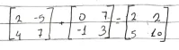
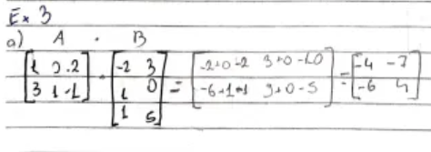
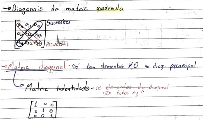
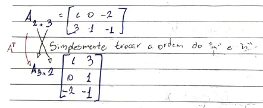
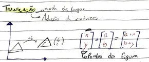
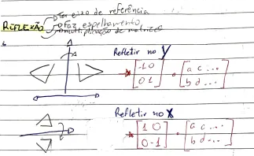
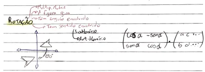
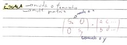

Matrizes
As matrizes são uma forma de armazenar números por meio de linhas e
colunas, com intuito de fazer uma imagem ou forma em um plano
cartesiano, ou como eu escrevi de forma bem formal no caderno, "Um
Array, só que com mais colunas".
Composição de uma Matriz
Uma matriz é feita por linhas e colunas de números, onde são
atribuídos um "valor" para encontrar a sua posição.
Am*n
- O "A" representa o número que está na matriz, o "m" representa a
linha, e o "n" representa a coluna em que o número A está posicionado.

Aqui temos um exemplo de matrizes, seguindo a lógica anterior, na
primeira matriz, o primeiro valor, A11 é 2; A12
é -5; A21 é 4; e por último A22 é 7.
Soma de Matrizes
Como visto no exemplo acima, uma soma de matriz consiste em somar os
valores de uma matriz, mas somente acontece se o número de colunas da
1° matriz é igual ao de linhas da 2° matriz, ou seja A15 e
A54 são somáveis.
Subtração de Matrizes
A lógica da subtração de matrizes é igual a de soma, somente
invertendo o sinal.
Multiplicação de Matrizes
A Multiplicação de matrizes é realizada pegando a 1° linha da 1°
matrizes, e multiplicando pelas colunas da 2° matriz, e assim segue
por todas as linhas da matriz. Segue a mesma lógica da adição, onde só
acontece se o número de colunas da 1° matriz é igual ao de linhas da
2° matriz.

Diagonais da Matriz quadrada
A diagonal que corta dá A11 até o último valor da matriz se
chama diagonal principal, já a que corta do último valor da primeira
linha até o primeiro valor da última linha se chama secundária.

Matriz Identidade
A matriz é uma matriz que somente tem valores diferentes de zero na
diagonal principal.
Transposição de Matrizes
A Transposição de matrizes é quando se troca de lugar as linhas e
colunas de uma matriz.

Transformação Gráfica
Translação
A Translação de matrizes realiza uma modificação na posição da matriz
em um plano cartesiano, ou seja, é uma adição, pois movimenta a matriz
somando números.

Reflexão
A reflexão de matrizes é a operação em que se espelha ela ao redor de
um eixo de referência, realiza uma multiplicação.

Rotação
A rotação e uma operação em que a figura gira em um certo ângulo por
meio de multiplicação, ela pode acontecer em dois sentidos, horário e
anti-horário.

Escala
A escala é uma operação feita para aumentar ou diminuir o tamanho de
uma matriz no plano cartesiano.
